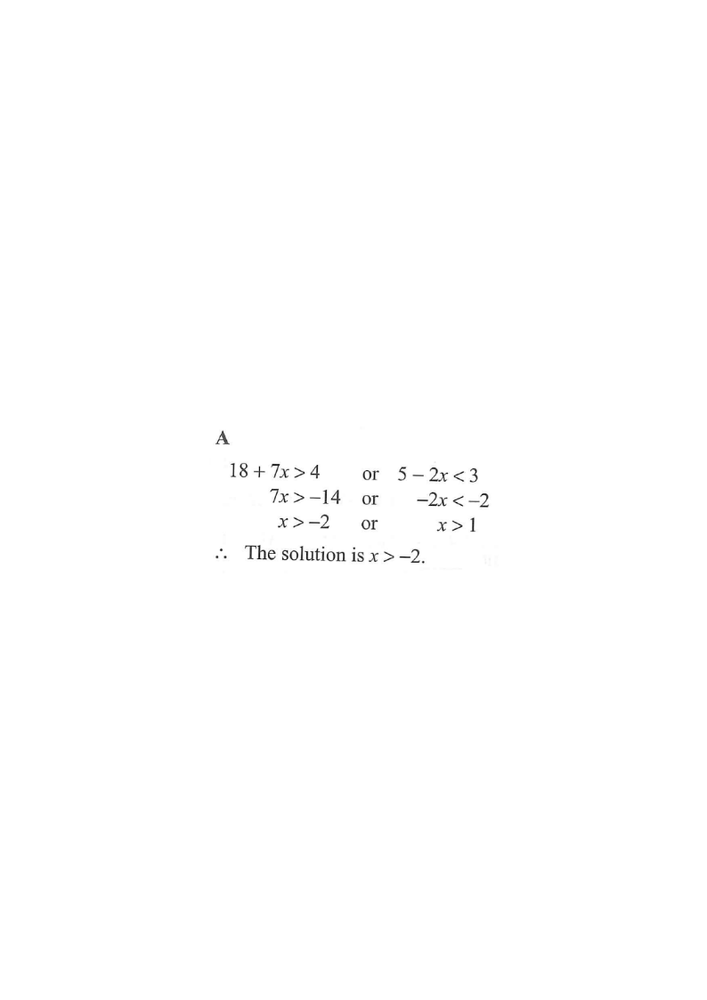

first inequality $18+7x>4$second inequality $5-2x<3$final combined region
HKDSE 2015 · Paper 2 · Q6
Inequalities
The solution of
\[ 18+7x>4 \quad \text{or} \quad 5-2x<3 \]
is
A. $x>-2$
B. $x>-1$
C. $x>1$
D. $x>4$

Figure (original exam diagram)
1Read the given information
We must solve the compound statement
\[ 18+7x>4 \qquad \text{or} \qquad 5-2x<3. \]
The word “or” is important — the answer is the union of the two solution sets, not the overlap.
2
Division Property of Inequality\(\dfrac{A}{k}>\dfrac{B}{k}\quad(k>0)\ \Longrightarrow\ A>B\)Dividing \(7x>-14\) by the positive number \(7\) leaves the sign as it is, giving \(x>-2\).
Solve the first inequality
\[18+7x>4\]
Subtract $18$ from both sides:
\[7x>4-18=-14\]
Divide both sides by $7\;(>0)$, so the sign does not flip:
\[x>-2\]
Dividing (or multiplying) by a negative number is the only time the inequality sign reverses.
3
Reversing the Inequality Sign\(AkB\)Dividing \(-2x<-2\) by \(-2\) reverses the sign, so \(x>1\).
Solve the second inequality
\[5-2x<3\]
Subtract $5$ from both sides:
\[-2x<3-5=-2\]
Divide both sides by $-2$ — this is negative, so reverse the sign:
\[x>\frac{-2}{-2}=1\]
Classic trap: forgetting to flip “$<$” into “$>$”.
4
Union of Solution Sets\(\{x:x>-2\}\cup\{x:x>1\}=\{x:x>-2\}\)With "or" the answer is the union; since \(x>1\) lies inside \(x>-2\), the wider set wins.
Combine with “or”
The solution set is
\[\{x:x>-2\}\;\cup\;\{x:x>1\}\]
On a number line, $\{x:x>-2\}$ already contains every number greater than $1$, so the union is simply
\[x>-2\]
With “or”, take the wider interval; with “and”, take the narrower overlap.
5Check the options
Drop one of the extreme values, e.g. $x=0$:
$18+7(0)=18>4$ ✓ and $5-2(0)=5$ is not $<3$, but “or” needs only one to hold.
$0>-2$ is true, so option A fits. Whereas $x>-1$ fails at $x=-1.5$, which satisfies the first inequality but is not in B, C or D.
Testing a boundary-ish value catches the narrowing error instantly.
Answer:A — the solution is $x>-2$.
PRACTICESimilar question — try it yourself
Question. The solution of \(18+5x>3\) or \(7-2x<5\) is
Show the worked solution
Step 1. The word "or" means the union of the two solution sets.
Step 2. First inequality: \(5x>3-18=-15\), and dividing by \(5>0\) keeps the sign, so \(x>-3\).
Step 3. Second inequality: \(-2x<5-7=-2\); dividing by \(-2<0\) reverses the sign, so \(x>1\).
Step 4. The union of \(\{x:x>-3\}\) and \(\{x:x>1\}\) is \(\{x:x>-3\}\), since every number greater than \(1\) is already greater than \(-3\).
Step 5. Check \(x=0\): \(18+0=18>3\) ✓, so \(0\) must be in the answer, and indeed \(0>-3\).